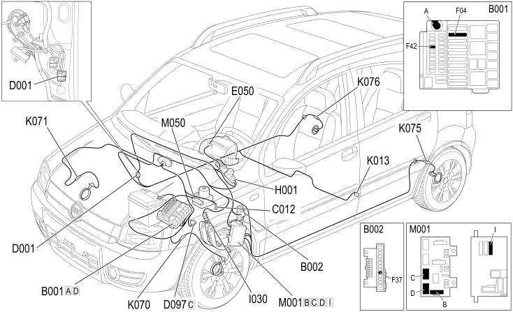

E7020 ABS - COMPONENT LOCATION
- Path
- Electrical equipment > 1 ELECTRICAL FUNCTIONS > E70 VEHICLE ELECTRONIC SYSTEMS > E7020 ABS > E7020 ABS - COMPONENT LOCATION
- Kind
- component location drawing
- Applies to
- engines: 1.2 8v; all production periods; only with equipment: 4x4 and POWERED THROTTLE
- Interactive page
- https://sloeber94.github.io/elrnDB-fPnd/en/#/169002453
Applies to: engines: 1.2 8v; all production periods; only with equipment: 4x4 and POWERED THROTTLE
